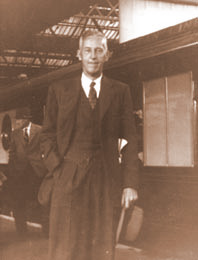
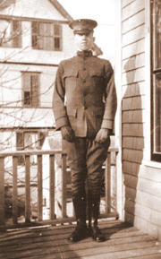
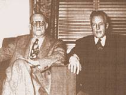

The Story of
Bill Wilson

William Griffith Wilson was born in East Dorset,
Vermont, on November 26, 1895 to Gilman and Emily Griffith Wilson in the
middle of a snow storm and behind the bar of his grandparents' hotel. This
inauspicious but curiously suggestive birth would produce the man who
decades later both Time and Life magazines would honor as one of the most
influential figures of the 20th Century.
Bill had a sister, Dorothy, who was four years younger than he. Bill's
otherwise happy childhood in rural
Vermont
was shattered when, at the age of 11, his parents divorced. This trauma was
accompanied by what he felt was abandonment when his father moved to
British Columbia and his mother to Boston where she studied osteopathic
medicine and was one of the first females to receive a degree from Harvard
University. It was around this time that Bill first experienced what became
a series of depressions that he would experience throughout his life.
His maternal grandparents, Fayette and Ella Griffith, prominent in the
small
New England
town, raised him and his
younger sister, Dorothy. Fayette doted on his grandchildren. He was
especially concerned with Bill whom he realized needed intellectual
stimulation and challenges which he encouraged. These ranged from reading
literature and teaching himself to play the violin, to the making of a
boomerang after Grandfather Griffith told him that no one but native
Australians could make and throw one. After a six-month effort, Bill
proudly demonstrated to Fayette a bona fide working boomerang.
Bill's confidence grew as a high-school student at the Burr and
Burton
School
in nearby
Manchester
,
Vermont
where he emerged as a class
leader and eventual senior-class president. But the unexpected death of a
beloved girl he intended to marry sunk Bill into a depression so severe he
was unable to graduate. Speaking about this loss years later, Bill wondered
how he survived it.
In 1913, Bill's life took an upward turn when he was introduced to Lois
Burnham of
Brooklyn Heights
,
New York
, the daughter of a
respected physician. Lois, who summered in
Vermont
with her parents and four
siblings, was four years Bill's senior. Despite this difference, the two
were attracted to each other but would not become romantically involved for
a few years. Bill eventually enrolled in
Norwich
University
, a military college,
which prepared him well for World War I. Bill left shortly before
graduation to join Coast Artillery in 1917 and advanced through training in
Plattsburg
,
New York
, where he discovered an innate
talent for leadership. That led to additional training at
Fort Monroe
,
Virginia
,
and a commission as second lieutenant.
Shortly before Bill embarked for duty overseas, he married Lois in the
Swedenborgen
Church
in
Brooklyn
Heights
on January 24, 1918. Waiting
in
England
for
deployment to France, Bill's regiment was bivouacked near
Winchester
,
England
,
and Bill one afternoon visited that city's great cathedral. While there,
Bill had an ecstatic experience of an overwhelming presence of God which
filled and reassured him as no other experience before had ever done. Upon
walking through the cathedral's cemetery, he saw to the tombstone of Thomas
Thetcher who Bill thought might be an ancestor of his friend, Ebby
Thatcher. He was so amazed by the epithet written there, Bill remembered it
years later when writing his own story for the book, Alcoholics Anonymous.
"Here lies a Hampshire Grenadier Who caught his death Drinking small
cold beer. A good soldier is ne'er forgot Whether he dieth by musket Or by
pot"

Although Bill did not see heavy fighting, he did
distinguish himself in service. Upon discharge, he returned to
Brooklyn
eventually securing a position in a surety
company and taking night courses in economics and law. Bill's potential law
career ended when intoxication prevented him from finishing his final exam.
(The irony is that years later Bill, being mindful of AA traditions,
declined an honorary law degree from Yale.)
Bill chose to work on Wall Street and became quite a success providing
critical information about companies to brokerage houses. He was drinking
at this time, often heavily, but the brokers were making so much money
based on what Bill was filing, they tolerated it. However, towards the end
of the decade Bill's drinking worsened to the point where it alarmed his
wife and business associates who eventually avoided him. When the market
crashed in 1929, he knew times would get much harder.
In the 1920's, Lois and Bill moved into the home of Lois' parents, Dr.
Clark and Matilda Burnham where, a few years later living in the house
alone with Lois, Bill would descend into chronic and desperate alcoholism.
Considered by himself and others to be hopeless, Bill was visited in
November 1934 by Ebby T., an old friend who Bill knew to be a severe
alcoholic but who was miraculously sober. Ebby told Bill that he had
stopped drinking through his association with the Oxford Group, a spiritual
fellowship, and that Bill also could get sober with the help of the group.
The Oxford Group was a
spiritual fellowship popular in the early half of the 20th century. It had
no membership, dues, paid leaders, creed or theology. Its appeal laid in
the application of certain principles in daily living namely, honesty,
purity, unselfishness and love. Oxford Groupers, as they were called, had
success with those trying to stop drinking such as Ebby. When he, an
incessant drinker, was sober two months, he went to visit the worst
alcoholic he knew to pass on his spiritual experience and its result. That
alcoholic was Bill Wilson. They sat at the kitchen table in
Brooklyn
Heights
(this table is now at
Stepping Stones) on which Bill had placed gin and pineapple juice, but Ebby
refused to imbibe. He had stopped drinking explaining, "I've got
religion."
Bill was resistant to Ebby's spiritual program arguing the existence of God
and certain religious concepts. But when an exasperated Ebby told Bill,
"Why don't you chose your own conception of God?" he could argue
no longer and gradually opened to a larger notion of God, of a Power
greater than himself. (It was Ebby's statement, translated later in AA's
steps as, "God as we understood Him," that has enabled those from
all sorts of religious backgrounds and those without any to avail
themselves of "this simple program." AA is spiritual, not
religious, and its member's conception of God is personal and, at times,
unique).
Although Bill's drinking continued, Ebby's visit opened an avenue of
possibility of sobriety. Entering
Towns
Hospital
in December 1934, Bill's life was utterly changed by a transforming
spiritual experience that resulted in his never needing to take another
drink of alcohol for the rest of his
life.
Bill was also aided by
Towns psychiatrist William D. Silkworth who believed that alcoholism was a
physical allergy to alcohol and not a moral malady. This allergy was
triggered by consuming even a small amount of alcohol by some people that
caused a compulsion to drink along with a mental obsession to do so. This
concept was so new at the time that when Bill asked Dr. Silkworth to expand
on it in the Doctor's Opinion for the book Alcoholics Anonymous, Dr.
Silkworth did so anonymously. It was only years later, when this theory
gained acceptance, did he allow his name to be used.
When Bill left
Towns
Hospital
, he was a
man reborn. Fired with his "mountain top" experience, he searched
the streets and bars of
Brooklyn
looking
for others to help. However, despite his ardent efforts to help other
alcoholics, his efforts were futile; no one was getting sober.
Six months into his own sobriety, Bill and a couple of friends found a
small company in Akron, Ohio that was ripe for take over and would pull
Bill and Lois out of the severe financial situation. It was not to be. The
deal collapsed, probably on stories of Bill's drinking, and Bill, dejected
and distressed returned to the city's Mayflower Hotel where he nearly drank
again.
Tempted by the lure of the bar, Bill headed to the public phone booth
instead and desperately sought another alcoholic, someone like himself to
talk to. After a series of calls, Bill eventually contacted a Dr. Robert H.
Smith, an
Akron
surgeon, and some time attendee at Oxford Group meetings. Agreeing to the
meeting only to appease Anne, his wife, Dr. Bob was determined to spend no
more than 15 minutes with this man who had a "cure" for
alcoholism. The two men went into a room
for what Bob thought would be a quick talk, but he was mistaken. They
finally stopped talking about five hours later.

Bill stayed in
Ohio
three months working with Bob to
help get other men sober. Bob drank once again a couple of weeks later
after coming home from a medical conference in
New Jersey
. The date of Dr. Bob's last
drink is June 10, 1935 -- founding date of Alcoholics Anonymous, the day
there were two sober people in fellowship, the day Dr. Bob drank for the
last time.
Through
the tireless efforts of the two men, others joined them and the small group
of sober alcoholics grew person by person, group by group. (The story of AA
can be read in publications such as AA Comes Of Age, available through
Alcoholics Anonymous World Services, Inc. It is a rich story of a
fascinating history.)
Bill returned to
Brooklyn
Heights
and his work
there took hold and the movement grew. In the early days, alcoholics
participated in the Oxford Group as their means of fellowship and growth.
In many cases, alcoholics comprised most of the membership in some groups.
In 1937, the growing awareness that an organization of alcoholics-only was
needed resulted in the official creation of Alcoholics Anonymous, a
fellowship of men and women who share their hope and strength with each
other to solve their common problem and to help other alcoholics achieve
sobriety.
The cornerstone of AA
is the Twelve Steps, a spiritual program of recovery, written by Bill who
expanded it from the basic six tenants of the Oxford Group. Bill would
later write the Twelve Traditions, a guide to fellowship members on how to
avoid the pitfalls to which other groups had succumbed. The traditions are
to the groups of AA as the steps are to the individual and are designed to
keep AA as a whole vibrant and focused on "our primary purpose."
Bill was 40 years old when he stopped drinking. He would remain sober for
the remaining 35 years of his life, spending most of his considerable
energy and mental acumen in helping create one of the greatest social
organizations ever known, Alcoholics Anonymous. He also would be the major
writer of the book, Alcoholics Anonymous, (AKA The Big Book), after which
the group would name itself as well as Twelve Steps and Twelve Traditions,
in addition to numerous articles and pamphlets.
In January 1971, Bill was flown in a private jet to the Miami Heart
Institute in hopes of finding treatment for his severe emphysema. He is
said to have been in good spirits during the flight but much weakened. Bill
never received treatment; he died the day he arrived -- January 24th, on
his and Lois' wedding anniversary. They had been married 53 years.
Bill's last address to the huge annual anniversary party held in his honor
in
New York City
two months before he died was delivered by Lois since Bill was very ill and
unable to attend. His message was based on an Arabian salutation --:
"I salute you, and I thank you for your lives." For those in the
audience, the sentiment was undoubtedly mutual.
© The Stepping Stones Foundation
|